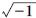
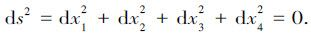
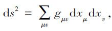

4. 物理学中的空间、以太和场的问题 [1] 。
科学思想是科学以前的思想的一种发展。由于空间概念在后者已经是基本的概念，我们就应当从科学以前思想中的空间概念入手。考查概念的方法有两种，而这两者对于理解这些概念都是不可缺少的。第一种是逻辑分析方法。它回答这样的问题： 概念同判断是怎样相互依存的？我们是在比较可靠的基础上来回答这一问题的。数学之所以能这样令人信服，就在于这种可靠性。但这种可靠性是以空无内容作为代价而取得的。概念只有在它们同感觉经验联系起来时才能得到内容，哪怕这联系是多么间接的。但是这种联系不能由逻辑的研究揭示出来；它只能由经验得出来。可是，决定概念体系的认识价值的，也正是这种联系。
举一个例子来说。假设有一位属于未来文化的考古学家，他找到了一本没有图形的欧几里得几何教本。他会发现“点”、“直线”、“平面”这些词是怎样用在命题中的。他也会看出这些命题是怎样相互推演出来的。他甚至还能按照已认到的规则构造出新的命题。但是只要“点”、“直线”、“平面”等等没有向他传达了什么，那么对他来说，构造出这些命题，依然不过是一种空洞的文字游戏。只有当这些词是传达了某些东西，几何学对他才会具有一些实在的内容。对于分析力学也是这样，实际上对于逻辑演绎科学的任何一种说明也都是这样。
说“直线”、“点”、“相交”等等传达了某些东西，究竟指的是什么意思呢？这话的意思是，人们能指出这些词所涉及的是哪些感觉经验。这个逻辑以外的问题是几何学的本性问题，这位考古学家只能凭直觉来解决它，即只能通过对他的经验的考查，看他是不是能够发现有什么东西是对应于理论中的那些原始名词，以及对应于这些名词所规定的公理的。只有在这种意义上，由概念所表示的实体的本性问题，才能合理地提出来。
对于我们的科学以前的概念来说，我们关于本体论问题所处的地位非常像这位考古学家。可以说，我们已经忘却了究竟是经验世界里的哪些特征使得我们能够造出这些概念，而且要是不戴上概念的传统解释的眼镜，我们就非常难以想象经验世界。另外还有一种困难： 我们的语言不得不用到同这种原始概念不可分割地联系着的词。当我们试图说明科学以前的空间概念的根本性质时，这些都是我们所面临的障碍。
在我们转到空间问题以前，先一般地讲一下对于概念的看法： 概念同感觉经验有关，但在逻辑意义上，它们绝不能由感觉经验推导出来。由于这个缘故，我始终未能理解为什么要去寻求康德所说的那种先验的东西。在任何本体论问题中，我们唯一可能做的是，在感觉经验的复合中找出这些概念所指的那些特征。
现在来看空间概念： 它似乎要以固体概念为前提。那些大概能引起空间概念的感觉经验复合和感觉印象的本性，常为人们所描述。某些视觉印象同触觉印象之间有对应关系，这些印象（触觉、视觉）在时间上可以继续追踪下去，以及它们随时都可以重复，这些就是上述感觉印象的特征。固体概念一旦从刚才所说的经验关系中形成——这概念绝不是以空间概念或空间关系概念为前提的——以后，就要从理智上去掌握这样一些固体之间的关系，这种愿望必然引起了一些同它们的空间关系相对应的概念。两个固体可以互相接触，也可以互相分开。在后一种情况下，两者之间可以插进第三个物体，而丝毫不牵动它们；在前一种情况下，就不可能如此。这些空间关系正像物体本身一样，显然都是实在的。如果有两个物体，它们对于填满一个这样的间隔是等效的，那么它们对于填满别的间隔也会是等效的。由此可见，间隔同选择哪种特殊物体来填满它无关；这对于空间关系同样是普遍正确的。显而易见，这种无关性是构成纯粹几何概念之所以有用的一个主要条件，它不一定是先验的东西。依我看来，这个间隔的概念是全部空间概念的出发点，它同选择哪种特殊物体来占据它无关。
因此，从感觉经验的观点来考查，空间概念的发展，依照上述的简要说明，似乎是遵循如下的图式——固体；固体的空间关系；间隔；空间。照这样的方式看来，空间好像同固体一样，在同样意义上也是一种实在的东西。
显然，作为一种实在事物的空间概念早已存在于科学以外的概念世界里。但是欧几里得的数学对这概念本身却一无所知；它只限于客体以及客体之间的空间关系这些概念。点、平面、直线、截段都是理想化的固体。一切空间关系都归结为接触关系（直线和平面的相交、在直线上的点，等等）。在这个概念体系里根本没有出现空间是连续区的概念。这概念是笛卡尔用空间坐标来描述空间中的点时才第一次被引进来。在这里，几何图形第一次有几分显现为那个被设想为三维连续区的无限空间的一部分。
笛卡尔处理空间方法的巨大优越性绝不限于把分析用于几何学。最主要之点倒似乎是： 希腊人在几何描述中偏爱于某些特殊的对象（直线、平面）；而对于别的对象（比如椭圆）要作这种描述，那只得借助于点、直线和平面来作图或者下定义的。相反，在笛卡尔的处理方法中，比如所有各种面，在原则上都是有同等地位的，在建立几何学时，一点也不随意偏爱于平直的构造。
就几何学被看作是关于支配实际刚体相互空间关系的定律的科学而论，应当认为它是物理学的一个最古老的分支。正如我已经讲过的，即使没有空间概念本身，这门科学也还是能够过得去的，对于它来说，理想的物质形式——点、直线、平面、截段——就已足够了。相反，像笛卡尔所想象的整个空间，却是牛顿物理学所绝对必需的。因为动力学不是单靠质点和质点之间的距离（可随时间变化）这些概念所能对付得了的。在牛顿的运动方程中，加速度概念是主要的角色，它不能单独由质点之间随时间变化的间距来规定。只有参照整个空间，牛顿的加速度才能设想或者规定下来。这样，就在空间概念的几何实在性之外，又给空间加上一个能确定惯性的新职能。当牛顿说空间是绝对的时候，他无疑是指空间的这种实在的意义，这使他必须把一种完全确定的运动状态加以空间，而这种运动状态看来是不能由力学现象完全确定下来的。这种空间在另一种意义上也被认为是绝对的；空间确定惯性的这种作用被认为是自主的，也就是说，它不受任何物理环境所影响；它影响物体，但没有什么东西能够影响它。
但是直到最近，物理学家心目中的空间仍然不过是一切事件的被动的容器，它并不参与物理事件。由于光的波动论和法拉第与麦克斯韦的电磁场理论，思想才开始发生新的转变。由此弄明白了，在自由空间里，存在着以波动形式传播的状态，也存在着定域的场，这种场能够对移到那里的带电体或者磁极给以力的作用。既然在19世纪的物理学家看来，要把物理作用或者物理状态加给空间本身完全是荒谬的，他们就以有重物质为模型，想出一种充满整个空间的媒质——以太，它的作用应该像电磁现象的媒介物，因而也是光的媒介物。被想象为构成电磁场的这种媒质的状态，起初是以固体的弹性变形为模型，从力学上去想象的。可是以太的这种力学理论从未取得真正成功，因此人们就逐渐放弃了要对以太场的本性作更精细解释的打算。于是以太就成为这样一种物质，它的唯一职能是作为电场的基体，而电场由于其本性，是不能作进一步分析的。由此得到如下的图像： 空间充满着以太，而有重物质的粒子或原子则浸游在其中；至于物质的原子结构已经在世纪交替的时候巩固地建立起来了。
既然物体之间的相互作用假定是通过场来实现的，那么在以太中也一定有引力场，但它的场定律在那时还找不到明确的形式。以太只被假定为一切越过空间起作用的力的场所。既然知道了带电物体运动时产生磁场，磁场的能量为惯性提供了一种模型，惯性也就好像是一种定域在以太中的场作用。
以太的力学性质最初是神秘的。后来出现了H.A.洛伦兹的伟大发现。那时已知道的一切电磁现象都可以根据下面两条假定来解释： 以太是牢固地固定在空间里的——也就是说，它完全不能运动；而电则是牢固地依附在可动的基本粒子上的。洛伦兹的发现在今天可以表述如下： 物理空间和以太不过是同一事物的两种名称；场是空间的物理状态。因为要是不能把特殊的运动状态加给以太，似乎就没有任何理由要把它作为一种同空间并列的特殊实体引进来。但〔当时的〕物理学家们还是同这样的思想方法相去甚远；在他们看来，空间仍然是一种刚性的、均匀的东西，它不能变化，也就是不能具有各种不同的状态。只有黎曼这个孤独而不为人所理解的天才，在上世纪中叶，刻苦地获得了空间的一种新概念，在那里，空间被剥夺了它的刚性，并且认识到空间有可能参与物理事件。由于这个理智上的成就是出现在法拉第和麦克斯韦的电场理论之前，这就更加值得我们钦佩了。随后出现了狭义相对论，它认识到一切惯性系在物理上的等效性。在联系到电动力学或者光的传播定律时，揭示了时间和空间的不可分割性。在此以前，人们暗中假定： 事件的四维连续区能以客观的方式分解为时间和空间——也就是说，在事件的世界里，给“现在”以绝对的意义。随着同时性的相对性的发现，空间和时间就融合为一个单一的连续区，正像以前的空间三维连续区一样。物理空间因此扩大为四维空间，它也包括了时间的一维。狭义相对论的四维空间像牛顿的空间一样地刚硬和绝对。
相对论是说明理论科学在现代发展的基本特征的一个良好的例子。初始的假说变得愈来愈抽象，离经验愈来愈远。另一方面，它更接近一切科学的伟大目标，即要从尽可能少的假说或者公理出发，通过逻辑的演绎，概括尽可能多的经验事实。同时，从公理引向经验事实或者可证实的结论的思路也就愈来愈长，愈来愈微妙。理论科学家在他探索理论时，就不得不愈来愈听从纯粹数学的、形式的考虑，因为实验家的物理经验不能把他提高到最抽象的领域中去。适用于科学幼年时代的以归纳为主的方法，正在让位给探索性的演绎法。这样一种理论结构，在它能导出那些可以同经验作比较的结论之前，需要加以非常彻底的精心推敲。在这里，所观察到的事实无疑地也还是最高的裁决者；但是，公理同它们的可证实的结论被一条很宽的鸿沟分隔开来，在没有通过极其辛勤而艰巨的思考把这两者连接起来以前，它不能作出裁决。理论家在着手这项十分艰巨的工作时，应当清醒地意识到，他的努力也许只会使他的理论注定要受到致命的打击。对于承担这种劳动的理论家，不应当吹毛求疵地说他是“异想天开”；相反，应当允许他有权去自由发挥他的幻想，因为除此以外就没有别的道路可以达到目的。他的幻想并不是无聊的白日做梦，而是为求得逻辑上最简单的可能性及其结论的探索。为了使听众或读者更愿来注意地听取下面一连串的想法，就需要作这样的恳求；就是这条思路，它把我们从狭义相对论引导到广义相对论，从而再引导到它最近的一个分支，即统一场论。在作这样的说明时，免不了要用到数学符号。
我们从狭义相对论讲起。这理论也还是直接以一条经验定律为根据的，这条定律就是光速不变定律。设P 是空虚空间中的一个点，P′ 是同它相隔距离dσ 而无限接近的另一个点。设有一道闪光在时间t 从P 处射出，而在t +dt 到达P′ .那么
dσ 2 =c 2 dt 2 .
如果dx 1 ,dx 2 ,dx 3 是dσ 的正交投影，并且引进虚时间坐标

ct =x 4 ,那么上述光速不变定律就取如下形式
既然这个公式是表示一种实在的情况，我们就可以给ds 这个量以一种实在的意义，即使假设四维连续区中所选取的两个邻近点的ds 并不等于零，情况也是如此。这件事可以这样来表示： 狭义相对论的四维空间（带有虚的时间坐标）具有欧几里得的度规。
这种度规所以称为欧几里得度规，那是同下面这件事有关。在三维连续区里假定这样的一种度规，就完全相当于假定欧几里得几何的公理。因此，定义度规的方程就不过是把毕达哥拉斯定理用于坐标的微分罢了。
在狭义相对论中，许可的坐标改变（通过变换）是这样的： 在新坐标系中，ds 2 这个量（基本不变量）也等于坐标微分的平方之和。这种变换叫做洛伦兹变换。
狭义相对论的启发性方法可由下述原理来表征： 只有这样的一些方程才有资格表示自然规律，那就是，在坐标用洛伦兹变换作了改变以后，这些方程的形式仍不改变（方程对于洛伦兹变换的协变性）。
这个方法使我们发现了动量同能量之间，电场强度同磁场强度之间，静电力同动电力之间，以及惯性质量同能量之间的必然联系；物理学中独立概念和基本方程的数目就因此减少了。
这个方法指向它本身范围之外。难道表示自然规律的方程只对洛伦兹变换是协变的，而对别的变换就不协变吗？那样提出问题实在没有什么意思，因为所有方程组都可用广义坐标来表示。我们应当问的是： 自然规律是不是这样构成的，通过任何一组特殊的坐标选择，这些规律不作实质性的简化？
我们只要顺便提一下，我们的关于惯性质量同重力质量相等这条经验定律提示我们，要给这个问题以肯定的回答。如果我们把一切坐标系对于表述自然规律的等效性提升为原理，那么我们就得到了广义相对论，只要我们至少在四维空间的无限小部分仍然还保留光速不变定律，或者换句话说，保留欧几里得度规的客观意义这条假说就行了。
这就是说： 对于空间的非无限小区域，假设有广义黎曼度规存在（这在物理学上是有深远意义的），它的形式如下：

此处的总和是关于指标从1，1到4，4全部组合的累加。
这种空间的结构同欧几里得空间的结构有一个方面是根本不同的。系数gμv 暂时是坐标x 1 和x 4 的任何一个函数，空间的结构却要等到gμv 这些函数都确实知道了以后才能真正确定下来。人们也可以说： 这样一种空间的结构本身完全是未定的。只有规定了那些为gμv 的度规场所满足的定律，空间的结构才能比较严格地确定下来。根据物理上的理由，这就是假定： 度规场同时也就是引力场。
既然引力场是由物体的组态来确定，并且随它而变化的，那么这种空间的几何结构也该取决于物理的因素。因此，依照这种理论，空间——正如黎曼所猜测的那样——不再是绝对的了；它的结构取决于物理的影响。（物理的）几何学已不再像欧几里得几何那样是一门孤立的科学了。
因此，引力问题就归结为这样一个数学问题： 要找出最简单的基本方程，这些方程对于任何坐标变换都是协变的。这是一个十分明确的问题，它至少是可以解决的。
我不想在这里讲这个理论的实验证实，而只想立刻说明一下，为什么这理论不能永远满足于这一点成就。引力固然已经从空间结构推演出来了，但是除了引力场，还有电磁场。首先，这个电磁场就必须作为一种同引力无关的实体而引到这理论中来。考虑到电磁场的存在，基本场方程必须加进一些项。但是，认为有两种彼此独立的空间结构，即度规-引力结构和电磁结构，这种想法对于理论家来说是无法容忍的。这就使我们相信： 这两种场必定对应于一个统一的空间结构。 [2]
表现为广义相对论的一种数学上独立的扩充的“统一场论”，就企图使场论满足上述这个最后假设。其形式问题应当这样提出： 有没有这样一种连续区理论，在那里除度规以外还有一种新的结构元素，它同度规结合成为一个整体？如果有这样的理论，那么能支配这种连续区的最简单场定律是什么？最后，这些场定律是否完全适合于表示引力场和电磁场的性质？此外，还有一个问题： 微粒（电子和质子）是否能看成是场的特别密集的地方，而其运动则是由场方程所决定？在目前，要回答前面三个问题，只有一个办法。它所依据的空间结构可描述如下，而这种描述同样也可适用于任何维空间。
空间具有黎曼度规。这就是说，在每一点P 的无限小的邻近处，欧几里得几何是成立的。因此，在每一点P 的邻近，都有一个局部的笛卡尔坐标系，对于这个坐标系来说，度规可以根据毕达哥拉斯定理计算出来。如果我们现在设想从这些局部坐标系的各根正轴截取长度1，我们就得到正交的“n 维局部标架”。这种n 维局部标架在空间里别的任何点P′ 上也都可以找到。因此，如果有一条从P 点或者P′ 点出发的线元（PG 或P′G′ ）是已定的，那么这条线元的量值，就可借助于有关的n 维局部标架，由它的局部坐标用毕达哥拉斯定理计算出来。所以在讲到两条线元PG 同P′G′ 的数值相等时，是有其确定意义的。
现在必须注意，局部的正交n 维标架不是用度规就可完全确定的。因为我们还可以完全自由地选择n 维标架的取向，而在按照毕达哥拉斯定理计算线元的长短时，其结果不会引起任何变化。由此可知，在一个其结构仅仅由黎曼度规组成的空间里，两条线元PG 和P′G′ 可以在它们的量值上作比较，但在方向上却不行，特别是说两条线元相互平行，那就毫无意义。所以就这方面来说，纯粹的度规（黎曼的）空间在结构上要比欧几里得空间贫乏。
我们既然要寻求一种在结构上比黎曼空间更加丰富的空间，最容易想到的是在黎曼空间里加进方向关系，也就是加进平行性。因此，对于通过P 点的每一个方向，假定都有一个通过P′ 的确定的方向，并且假定这种相互关系是一种确定的关系。这样相互发生关系的两个方向，我们称之为“平行”。假定这种平行关系还进一步满足角一致性的条件： 如果PG 和PK 是在P 点的两个方向，P′G′ 和P′K′ 是通过P′ 点的两个对应的平行方向，那么KPG 同K′P′G′ 这两只角（可用欧几里得的方法在局部坐标系中量得）应当相等。
这样，空间的基本结构就完全确定下来了。数学上对它最便当的描述如下： 在定点P 处，我们假定有一正交的n 维标架，它的取向是经过自由选取而确定的。在空间其他任何点P′ 处，我们把它的局部n 维标架照这样来取方向： 使它的各根轴都同P 点的对应轴相平行。规定了上述的空间结构，并且自由选定了在一个点P 上的n 维标架的取向，那么所有的n 维标架就都完全确定下来了。现在让我们设想空间P 中任何一个高斯坐标系，并且在每一点上n 维标架的轴都投影到这个高斯坐标系上。这个有n 2 个分量的系集就完备地描述了这种空间的结构。
在某种意义上说，这种空间结构是介乎黎曼结构和欧几里得结构之间的。它不同于黎曼结构的，是给直线的存在留有余地，所谓直线就是指这样的一种线，它的一切线元都是两两相互平行的。这里所讲到的几何也不同于欧几里得几何，那在于它不存在平行四边形。如果在线段PG 的两端P 和G 引出两条相等而平行的线段PP′ 和GG′ ，那么，一般说来，P′G′ 同PG 既不相等，也不平行。
到目前为止，已经解决了的数学问题是： 可能支配上述这种空间结构的最简单的条件是什么？还要加以研究的主要问题是： 用回答前一问题的方程的不带奇点的解，对于物理上的场和基元实体究竟能够表示到什么程度？
[1] 译自《我的世界观》1934年英文版82-100页和《思想和见解》276-285页。此文写作时间大概是1930年。按1930年爱因斯坦曾为在柏林举行的第二届世界动力学术会议作过题为《物理学中的空间、场和以太问题》的报告，同年又在《哲学论坛》（Forun Philosophicum ）第1卷上发表题为《物理学中的空间、以太和场》的论文，所有这三篇文章实质相似，但文字各不相同。——编译者注。
[2] 《思想和见解》中此文到此为止，下面系根据《我的世界观》英译本译出。——编译者注。